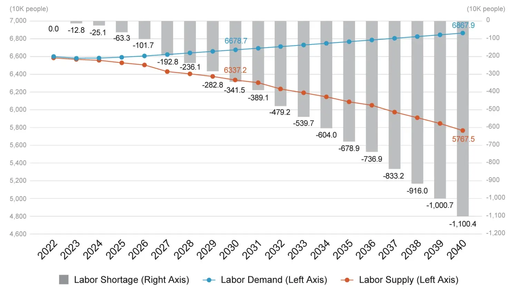
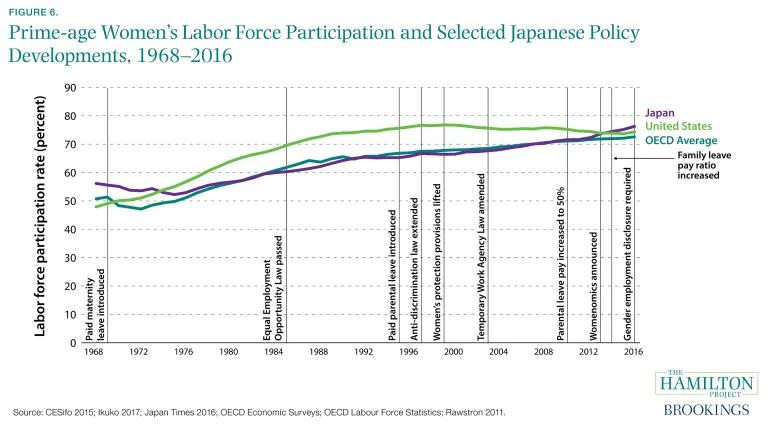

On Friday, June 14th, 2024, Japan's legislature significantly altered the law that governs foreign workers' visas. Many more industries are now allowed to accept low-skilled foreign workers, who can stay for five years compared to the three years previously allotted (ET Online, 2024). As the native population is projected to decline by 40% by 2065 while shifting towards a healthier work environment, Japan is compelled to shore up the supply side of its labor market (Recruit Holdings, 2017).
How did we get here?
After the shift from agriculture to manufacturing, Japan's birth rate began to decline; this phenomenon is also observed in many developed countries, including Italy and France (Japan Birth Rate 1950–2024, 2024). The first mention of depopulation by the government was in 1966 regarding the decline and eventual desertion of rural villages; the first law addressing it was signed in 1979 (Dilley, 2017; Odagiri, n.d.). Japan's population has been declining since 2009, and acute labor shortages are common across rural areas such as Hokkaido (Japan Population 1950–2024, 2024). As the pool of workers shrinks, local companies are forced to compete for workers, ultimately increasing the average wage (Urasaki & Munakata, 2024). In response to the lack of willing successors, many older business owners have to close their businesses when they retire instead of passing them on (Dooley & Ueno, 2023).
In Japan, hours have declined in response to shifts in work culture. This is reflected in a roughly 40% decrease in hours worked per worker from 2000 to 2024 (Japanese Work Hours Statistics: Market Data Report 2024, 2024). Earlier this year, new overtime legislation was established, limiting truck drivers to 960 hours a year of overtime, and construction workers to 720, reducing the most profuse overtime hours (The Japan Times, 2024). However, the average Japanese worker still clocks in 24 hours of overtime a month, one of the highest rates for developed countries (The CEO Magazine, 2019). These reforms, which aim to rein in unhealthy hours, in turn end up exacerbating labor shortages as well. The transportation and construction sectors remain heavily reliant on overtime hours, and without more workers prices will likely rise (Rich & Notoya, 2024). For example, there is currently a 5:1 ratio between job openings and job seekers in the construction industry.
Japan's demographic issues aren't as simple as opening the borders and granting visas at will. Japan has a fraught relationship with foreigners, so while importing workers is economically beneficial, it is also unpopular due to nationalistic sentiments and negative views of immigrants (Trostel-Shaw et al., 2021). The latter has prevailed in the past, buoyed by a lack of urgency supported by increases in worker productivity (Masai et al., 2024). However, Japan has reached a point where worker productivity alone can no longer keep pace with depopulation (Lang, 2024).

Coordinated Change
Since Japan has largely rejected immigration as an economic tool to solve its labor shortage, policymakers have gotten creative. The government is taking a multi-faceted approach to combating labor scarcity resulting from long-term demographic changes. No one piece of legislation sums up Japan's efforts; instead, local, regional, and national governments are working with constituents to find solutions.
One measure that has proven to be effective on a large scale is coordinated initiatives to increase labor force participation. Many of these efforts are based on 'Womenomics', the idea put forward by Shinzo Abe, the former prime minister of Japan, that more women in the workplace are essential for the economy (Groysberg et al., 2017). These endeavors have been largely successful, as the labor force participation rate for women has risen from a low of 48% in 2012 to a high of 55% in 2023, an increase of 4.5 million workers (Labor Force Participation Rate, Female — Japan, n.d.). Much of this has been achieved by improving daycare access, delegitimizing traditional gender roles, and setting targets for women in the workplace.

Workforce participation is not a permanent solution with a declining population. The government has addressed this by catalyzing growth in worker productivity. In the transportation and logistics sector, labor shortages are eased by increasing the speed limits on expressways for trucks (Yomiuri, 2024). Companies and even municipal governments are embracing AI usage to perform labor-intensive administrative tasks (Oi, 2024).
The most drastic step taken so far to head off job vacancies is the recent expansion of the low-skilled worker visa program. Japan has more than doubled its target to 820,000 workers over the next five years (Rich & Notoya, 2024). These workers have a temporary status and, in most scenarios, must stay employed at the same employer in a few specific industries (Rich & Notoya, 2024). It is exceedingly difficult to attain mobility or permanent residence in Japan under the temporary visa. Under the previous version of the program, only 37 foreigners were granted permanent resident status by switching to the skilled worker visa after learning Japanese. The new law contains provisions that make even permanent residents uncertain about their place in the country (Kuboda, 2024). However, this legislation also signals a step towards continuing economic prosperity.
What now?
Japan's landmark foreign worker reform has the potential to supercharge Japan's economy. Even so, it brings up more questions than it answers. What is the cost of immigration? Should we avoid domestic wage pressure and labor competition? Would immigration bring more social stability than short-term work programs? Can an array of patchwork solutions fend off an existential threat? That's up for debate, but for now, Japan has chosen short-term labor.
References
Burkhard, J., Calafà, M., Shen, C., & Deschwanden, L. (n.d.). Japanese work culture in the last 30 years: HUM-445 Contemporary Japan II. École Polytechnique Fédérale de Lausanne. https://matteocalafa.com/documents/Japanese-Work-Culture-in-the-last-30-years.pdf
Dilley, L. (2017). Revitalising the rural in Japan: Working through the power of place. Electronic Journal of Contemporary Japanese Studies. http://www.japanesestudies.org.uk/ejcjs/vol17/iss3/dilley.html
Dooley, B., & Ueno, H. (2023, January 3). Japan's business owners can't find successors. This man is giving his away. The New York Times. https://www.nytimes.com/2023/01/03/business/japan-businesses-succession.html
ET Online. (2024, March 30). Japan expands its foreign worker visa programme for the first time since inception. The Economic Times. https://economictimes.indiatimes.com/nri/work/japan-expands-its-foreign-worker-visa-programme
Future predictions 2040 in Japan: The dawn of the limited-labor supply society. (2017). Recruit Holdings. https://recruit-holdings.com/en/blog/post_20230926_0001/
Groysberg, B., Yamazaki, M., Sato, N., & Lane, D. (2017). Womenomics in Japan. Harvard Business School. https://www.hbs.edu/faculty/Pages/item.aspx?num=52270
Japan birth rate 1950–2024. (2024). Macrotrends. https://www.macrotrends.net/global-metrics/countries/JPN/japan/birth-rate
Japanese work hours statistics: Market data report 2024. (2024). Worldmetrics. https://worldmetrics.org/japanese-work-hours-statistics/
Kubota, K. (2024). Cabinet approves replacement plan for foreign intern trainee program. The Asahi Shimbun. https://www.asahi.com/ajw/articles/15199599
Labor force participation rate, female (% of female population ages 15+) (modeled ILO estimate) — Japan. (n.d.). World Bank Open Data. https://data.worldbank.org/indicator/SL.TLF.CACT.FE.ZS?locations=JP
Lang, E. (2024, July 3). Japan headed for shortage of 970,000 foreign workers in 2040. Nikkei Asia. https://asia.nikkei.com/Spotlight/Japan-immigration/Japan-headed-for-shortage-of-970-000-foreign-workers-in-2040
Masai, Y., Latz, G., & Hijino, S. (2024, January 24). Economy of Japan. Britannica. https://www.britannica.com/money/economy-of-Japan
Odagiri, T. (n.d.). Rural regeneration in Japan. Newcastle University. https://www.ncl.ac.uk/media/wwwnclacuk/centreforruraleconomy/files/regeneration-japan.pdf
Oi, M. (2024, April 19). Can AI help solve Japan's labour shortages? BBC News. https://www.bbc.com/news/business-68225115
Japan population 1950–2024. (2024). Macrotrends. https://www.macrotrends.net/global-metrics/countries/JPN/japan/population
Rich, M., & Notoya, K. (2024). Japan needs foreign workers. It's just not sure it wants them to stay. The New York Times. https://www.nytimes.com/2024/08/05/world/asia/japan-foreign-workers.html
The CEO Magazine. (2019, May). These are the surprising countries working the most overtime. https://www.theceomagazine.com/business/health-wellbeing/countries-working-most-overtime/
The Japan Times. (2024, March 31). New work-style reform measures kick off in Japan. https://www.japantimes.co.jp/news/2024/03/31/japan/japan-april-1-changes/
Trostel-Shaw, C., Facer, G., & Moehling, C. (2021). Immigrants and foreigners in Japan: Their role in society and how they are perceived. University of Oregon Scholars' Bank. https://scholarsbank.uoregon.edu/xmlui/handle/1794/26478
Urasaki, Y., & Munakata, A. (2024, May 18). Japan's small regional companies vie to raise pay amid labor shortage. Nikkei Asia. https://asia.nikkei.com/Spotlight/Datawatch/Japan-s-small-regional-companies-vie-to-raise-pay-amid-labor-shortage
Yomiuri Shimbun. (2024, February 27). Japan to raise truck speed limit in April. The Japan News. https://japannews.yomiuri.co.jp/society/general-news/20240227-171260/